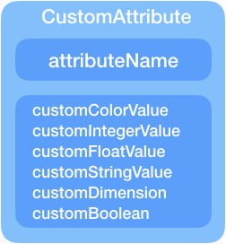
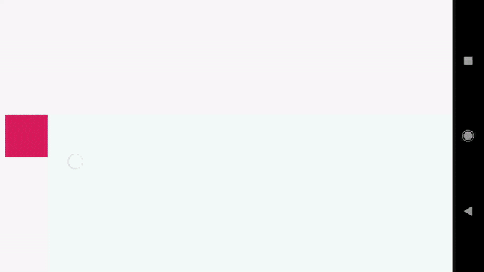
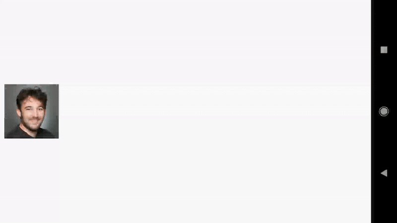
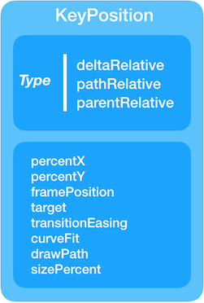
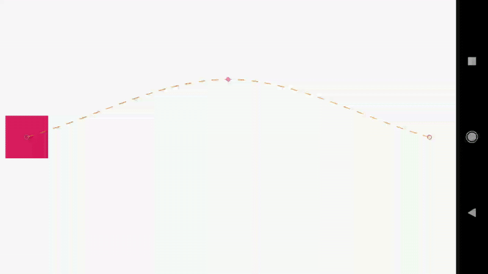
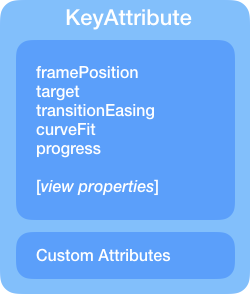
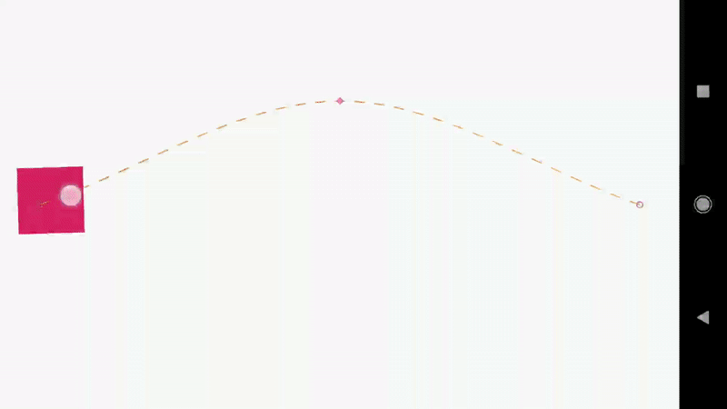

「译」MotionLayout导论 (part II) 原文链接: Introduction to MotionLayout (part II)
前言 这是系列文章「MotionLayout导论」的 part II 。阅读之前请先查看 part I (中文点这)
在文本中，我们将继续通过各种示例揭露基本的 MotionLayout 特性，介绍自定义属性 (custom attribute)、图像操作 (image operations) 和关键帧 (keyframes)。
示例 03: 自定义属性 (Custom attribute) 在part I的最后，我们创建了一个引用MotionScene的MotionLayout（self-contained MotionScene）。我们可以进一步利用它，来实现其他属性的过渡。

事实上，最初的ConstraintSet只封装了布局规则；但是为了丰富动画效果，我们经常需要做些别的事（比如背景颜色）。在 ConstraintLayout 2.0，ConstraintSet也可以存储自定义属性状态。查看下方动画，背景颜色跟着移动过程发生了改变。
以前，你不得不在代码中处理此问题。现在，你可以直接通过 XML 指定属性：
<Constraint android:id ="@+id/button" ... > <CustomAttribute motion:attributeName ="backgroundColor" motion:customColorValue ="#D81B60" /> </Constraint >
这是这个动画修改后的MotionScene 文件
<?xml version="1.0" encoding="utf-8"?> <MotionScene xmlns:android ="http://schemas.android.com/apk/res/android" xmlns:motion ="http://schemas.android.com/apk/res-auto" > <Transition motion:constraintSetEnd ="@+id/end" motion:constraintSetStart ="@+id/start" motion:duration ="1000" motion:interpolator ="linear" > <OnSwipe motion:dragDirection ="dragRight" motion:touchAnchorId ="@+id/button" motion:touchAnchorSide ="right" /> </Transition > <ConstraintSet android:id ="@+id/start" > <Constraint android:id ="@+id/button" android:layout_width ="64dp" android:layout_height ="64dp" android:layout_marginStart ="8dp" motion:layout_constraintBottom_toBottomOf ="parent" motion:layout_constraintStart_toStartOf ="parent" motion:layout_constraintTop_toTopOf ="parent" > <CustomAttribute motion:attributeName ="backgroundColor" motion:customColorValue ="#D81B60" /> </Constraint > </ConstraintSet > <ConstraintSet android:id ="@+id/end" > <Constraint android:id ="@+id/button" android:layout_width ="64dp" android:layout_height ="64dp" android:layout_marginEnd ="8dp" motion:layout_constraintBottom_toBottomOf ="parent" motion:layout_constraintEnd_toEndOf ="parent" motion:layout_constraintTop_toTopOf ="parent" > <CustomAttribute motion:attributeName ="backgroundColor" motion:customColorValue ="#9999FF" /> </Constraint > </ConstraintSet > </MotionScene >
自定义属性是用属性名字 (attributeName) 来指定的，属性名字需要和对象中的getter/setter方法对应：
getter : getName (e.g. getBackgroundColor)setter : setName (e.g. setBackgroundColor)
另外还需要指定属性值的类型：
customColorValuecustomIntegerValuecustomFloatValuecustomStringValuecustomDimensioncustomBoolean
最后当我们定义一个自定义属性，你需要同时定义开始 (start) 和结束 (end) 的ConstraintSet
示例 04 : 图像滤镜(ImageFilterView)(1/2) 当我们处理复杂的过渡时，常常需要对图像进行一些操作，并且对他们进行动画处理。ConstraintLayout2.0 引入了名为 ImageFilterView （继承与AppCompatImageView）的一个有用的工具类来轻松实现这一点。
下面是我们在两张图片之间做的淡入淡出 (cross-fade) 效果：

首先我们需要创建一个包含 ImageFilterView 的 MotionLayout 文件。
<?xml version="1.0" encoding="utf-8"?> <android.support.constraint.motion.MotionLayout xmlns:android ="http://schemas.android.com/apk/res/android" xmlns:tools ="http://schemas.android.com/tools" xmlns:app ="http://schemas.android.com/apk/res-auto" android:id ="@+id/motionLayout" app:layoutDescription ="@xml/scene_04" android:layout_width ="match_parent" android:layout_height ="match_parent" > <android.support.constraint.utils.ImageFilterView android:id ="@+id/image" android:background ="@color/colorAccent" android:src ="@drawable/roard" app:altSrc ="@drawable/hoford" android:layout_width ="64dp" android:layout_height ="64dp" /> </android.support.constraint.motion.MotionLayout >
它与 ImageView 的主要区别在于altSrc 属性
<android.support.constraint.image.ImageFilterView android:id ="@+id/image" ... android:src ="@drawable/roard" app:altSrc ="@drawable/hoford" />
在MotionScene 文件中使用对应的淡入淡出属性（crossfade）
<?xml version="1.0" encoding="utf-8"?> <MotionScene xmlns:android ="http://schemas.android.com/apk/res/android" xmlns:motion ="http://schemas.android.com/apk/res-auto" > <Transition motion:constraintSetEnd ="@+id/end" motion:constraintSetStart ="@+id/start" motion:duration ="1000" motion:interpolator ="linear" > <OnSwipe motion:dragDirection ="dragRight" motion:touchAnchorId ="@+id/image" motion:touchAnchorSide ="right" /> </Transition > <ConstraintSet android:id ="@+id/start" > <Constraint android:id ="@+id/image" android:layout_width ="100dp" android:layout_height ="100dp" android:layout_marginStart ="8dp" motion:layout_constraintBottom_toBottomOf ="parent" motion:layout_constraintStart_toStartOf ="parent" motion:layout_constraintTop_toTopOf ="parent" > <CustomAttribute motion:attributeName ="crossfade" motion:customFloatValue ="0" /> </Constraint > </ConstraintSet > <ConstraintSet android:id ="@+id/end" > <Constraint android:id ="@+id/image" android:layout_width ="100dp" android:layout_height ="100dp" android:layout_marginEnd ="8dp" motion:layout_constraintBottom_toBottomOf ="parent" motion:layout_constraintEnd_toEndOf ="parent" motion:layout_constraintTop_toTopOf ="parent" > <CustomAttribute motion:attributeName ="crossfade" motion:customFloatValue ="1" /> </Constraint > </ConstraintSet > </MotionScene >
示例 05 : 图像滤镜(ImageFilterView)(1/2) ImageFilterView 也提供了更多的功能:
饱和度 saturation : 0 = grayscale, 1 = original, 2 = hyper saturated对比度 contrast : 1 = unchanged, 0 = gray, 2 = high contrast色温 warmth : 1 = neutral, 2 = warm (red tint), 0.5 = cold (blue tint)淡入淡出 crossfade (with app:altSrc)
这里有另外一个例子显示怎么使用滤镜饱和度：
简单的指定自定义属性就可以操作饱和度：
<CustomAttribute motion:attributeName ="saturation" motion:customFloatValue ="1" />
这里是这个例子使用的 MotionLayout 文件：
<?xml version="1.0" encoding="utf-8"?> <android.support.constraint.motion.MotionLayout xmlns:android ="http://schemas.android.com/apk/res/android" xmlns:app ="http://schemas.android.com/apk/res-auto" android:id ="@+id/motionLayout" app:layoutDescription ="@xml/scene_05" android:layout_width ="match_parent" android:layout_height ="match_parent" > <android.support.constraint.utils.ImageFilterView android:id ="@+id/image" android:src ="@drawable/sunset2" android:scaleType ="centerCrop" android:layout_width ="match_parent" android:layout_height ="300dp" /> </android.support.constraint.motion.MotionLayout >
这里是对应的场景（Scene）文件：
<?xml version="1.0" encoding="utf-8"?> <MotionScene xmlns:android ="http://schemas.android.com/apk/res/android" xmlns:motion ="http://schemas.android.com/apk/res-auto" > <Transition motion:constraintSetStart ="@+id/start" motion:constraintSetEnd ="@+id/end" motion:duration ="1000" > <OnSwipe motion:touchAnchorId ="@+id/image" motion:touchAnchorSide ="top" motion:dragDirection ="dragUp" /> </Transition > <ConstraintSet android:id ="@+id/start" > <Constraint android:id ="@+id/image" android:layout_width ="match_parent" android:layout_height ="300dp" motion:layout_constraintStart_toStartOf ="parent" motion:layout_constraintTop_toTopOf ="parent" > <CustomAttribute motion:attributeName ="saturation" motion:customFloatValue ="1" /> </Constraint > </ConstraintSet > <ConstraintSet android:id ="@+id/end" > <Constraint android:id ="@+id/image" android:layout_width ="match_parent" android:layout_height ="300dp" motion:layout_constraintBottom_toBottomOf ="parent" motion:layout_constraintEnd_toEndOf ="parent" > <CustomAttribute motion:attributeName ="saturation" motion:customFloatValue ="0" /> </Constraint > </ConstraintSet > </MotionScene >
关键帧(Keyframes) 大多数情况下，MotionLayout 是使用“静止状态” (resting states) 的 ConstraintSets 实现的。这种方式下，我们知道最终的布局结果将适应不同的屏幕尺寸：从本质上来说，MotionLayout的表现像一个典型的 ConstraintLayout。
原文：The general idea for MotionLayout is that “resting states” are implemented as ConstraintSets. This way, we know that the resulting layouts will correctly adapt to different screen sizes: essentially, MotionLayout will behave like a typical ConstraintLayout.
在某些情况，你可能希望有一个中间状态——一个要经过的状态(a state to go through)，而不是要停留的状态(not a state to stay in)。当然你可以指定两个以上的 ConstraintSets 来解决，但是更好的做法是使用 Keyframes。
关键帧可以应用于位置或属性值。它们主要让你在转换期间指定一个时间节点上的改变。
举个栗子，你可能想让一个控件在过渡进行到 25% 的时候转换变成红色。或者在过渡中的 50% 时，改为向上移动。
示例 06 : 关键帧 (1/2), 坐标(postion) 有多种设置位置关键帧 (KeyPosition) 的方法 (pathRelative、deltaRelative、parentRelative)，我们将在本系列的第4部分详细介绍。

简单介绍位置关键帧 (position keyframes)，这里指定了在过渡进行到 50% 的时候，位置在屏幕高度的 25%处。
<Transition ... > <KeyFrameSet > <KeyPosition motion:keyPositionType ="parentRelative" motion:percentY ="0.25" motion:framePosition ="50" motion:target ="@+id/button" /> </KeyFrameSet > </Transition >
最终的效果如下：

和以往一样，MotionLayout 文件仍然非常简单：
<?xml version="1.0" encoding="utf-8"?> <android.support.constraint.motion.MotionLayout xmlns:android ="http://schemas.android.com/apk/res/android" xmlns:tools ="http://schemas.android.com/tools" xmlns:app ="http://schemas.android.com/apk/res-auto" android:id ="@+id/motionLayout" app:layoutDescription ="@xml/scene_06" android:layout_width ="match_parent" android:layout_height ="match_parent" > <View android:id ="@+id/button" android:background ="@color/colorAccent" android:layout_width ="64dp" android:layout_height ="64dp" /> </android.support.constraint.motion.MotionLayout >
MotionScene 文件与我们之前看到的非常相似，只是添加了一个KeyPosition 元素:
<?xml version="1.0" encoding="utf-8"?> <MotionScene xmlns:android ="http://schemas.android.com/apk/res/android" xmlns:motion ="http://schemas.android.com/apk/res-auto" > <Transition motion:constraintSetStart ="@+id/start" motion:constraintSetEnd ="@+id/end" motion:duration ="1000" motion:interpolator ="linear" > <OnSwipe motion:touchAnchorId ="@+id/button" motion:touchAnchorSide ="right" motion:dragDirection ="dragRight" /> <KeyFrameSet > <KeyPosition motion:keyPositionType ="parentRelative" motion:percentY ="0.25" motion:framePosition ="50" motion:target ="@+id/button" /> </KeyFrameSet > </Transition > <ConstraintSet android:id ="@+id/start" > <Constraint android:id ="@+id/button" android:layout_width ="64dp" android:layout_height ="64dp" android:layout_marginStart ="8dp" motion:layout_constraintBottom_toBottomOf ="parent" motion:layout_constraintStart_toStartOf ="parent" motion:layout_constraintTop_toTopOf ="parent" > <CustomAttribute motion:attributeName ="backgroundColor" motion:customColorValue ="#D81B60" /> </Constraint > </ConstraintSet > <ConstraintSet android:id ="@+id/end" > <Constraint android:id ="@+id/button" android:layout_width ="64dp" android:layout_height ="64dp" android:layout_marginEnd ="8dp" motion:layout_constraintBottom_toBottomOf ="parent" motion:layout_constraintEnd_toEndOf ="parent" motion:layout_constraintTop_toTopOf ="parent" > <CustomAttribute motion:attributeName ="backgroundColor" motion:customColorValue ="#9999FF" /> </Constraint > </ConstraintSet > </MotionScene >
Example 07 : 关键帧 (2/2), 属性(attribute) 类似位置关键帧，你可以在过渡中的特定的指定属性值(使用KeyAttribute)。

例如，我们可能需要操纵对象在 50% 位置的时候，指定执行缩放和旋转，效果如下：

这可以通过在KeyFrameSet中添加一个KeyAttribute 元素来实现:
<KeyFrameSet > <KeyAttribute android:scaleX ="2" android:scaleY ="2" android:rotation ="-45" motion:framePosition ="50" motion:target ="@id/button" /> </KeyFrameSet >
MotionLayout 文件与前一个例子相同，唯一不同的是 MotionScene 文件中添加了KeyAttribute:
<?xml version="1.0" encoding="utf-8"?> <MotionScene xmlns:android ="http://schemas.android.com/apk/res/android" xmlns:motion ="http://schemas.android.com/apk/res-auto" > <Transition motion:constraintSetStart ="@+id/start" motion:constraintSetEnd ="@+id/end" motion:duration ="1000" motion:interpolator ="linear" > <OnSwipe motion:touchAnchorId ="@+id/button" motion:touchAnchorSide ="right" motion:dragDirection ="dragRight" /> <KeyFrameSet > <KeyAttribute android:scaleX ="2" android:scaleY ="2" android:rotation ="-45" motion:framePosition ="50" motion:target ="@id/button" /> <KeyPosition motion:keyPositionType ="screenRelative" motion:percentY ="0.2" motion:framePosition ="50" motion:target ="@id/button" /> </KeyFrameSet > </Transition > <ConstraintSet android:id ="@+id/start" > <Constraint android:id ="@+id/button" android:layout_width ="64dp" android:layout_height ="64dp" android:layout_marginStart ="8dp" motion:layout_constraintBottom_toBottomOf ="parent" motion:layout_constraintStart_toStartOf ="parent" motion:layout_constraintTop_toTopOf ="parent" > <CustomAttribute motion:attributeName ="backgroundColor" motion:customColorValue ="#D81B60" /> </Constraint > </ConstraintSet > <ConstraintSet android:id ="@+id/end" > <Constraint android:id ="@+id/button" android:layout_width ="64dp" android:layout_height ="64dp" android:layout_marginEnd ="8dp" motion:layout_constraintBottom_toBottomOf ="parent" motion:layout_constraintEnd_toEndOf ="parent" motion:layout_constraintTop_toTopOf ="parent" > <CustomAttribute motion:attributeName ="backgroundColor" motion:customColorValue ="#9999FF" /> </Constraint > </ConstraintSet > </MotionScene >
结论 第二章介绍了 MotionLayout 更高级的功能，给出了如何利用自定义属性和关键帧创建更引入注目的动画示例。
你可以在ConstraintLayout examples github repository 查看这些示例的源码。
在本系列文章中还有更多内容:
Introduction to MotionLayout (part I
Custom attributes, image transitions, keyframes (part II
Taking advantage of MotionLayout in your existing layouts (CoordinatorLayout, DrawerLayout, ViewPager) (part III
All about Keyframes! (part IV
MotionLayout as a choreographer of root layout
Nesting MotionLayout & other Views
MotionLayout with fragments